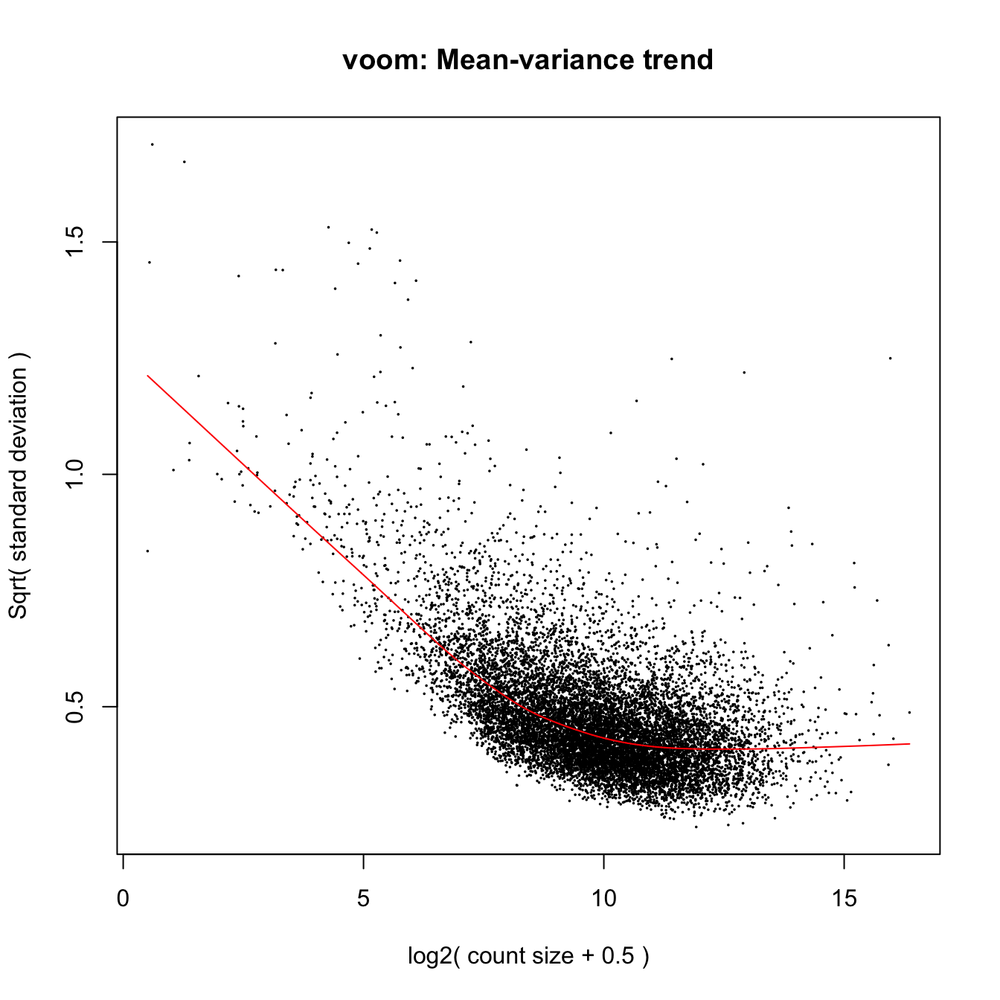

Understand why and when between- and within-sample normalization are needed
Apply common between- and within-sample normalization approaches to RNA-seq counts
Understand why the count nature of RNA-seq data requires modification to the Differential Expression approaches applied to microarray data (e.g. limma)
Apply models such as limma-trend, limma-voom, DESeq2 and edgeR for inference of Differential Expression
DataFrame with 6 rows and 7 columns
DPC Sex Group SeqRun MappedReads FeatureCounts
<factor> <factor> <factor> <factor> <integer> <integer>
Sample_ANAN001A 12.5 F Mu A 42452222 37655856
Sample_ANAN001B 12.5 M WT A 54503162 47106938
Sample_ANAN001C 12.5 M WT A 44978512 40448118
Sample_ANAN001D 12.5 F Mu A 50099336 44993589
Sample_ANAN001E 12.5 F Mu A 47163546 41840678
Sample_ANAN001F 12.5 F WT A 43893480 39483622
Sample
<character>
Sample_ANAN001A Sample_ANAN001A
Sample_ANAN001B Sample_ANAN001B
Sample_ANAN001C Sample_ANAN001C
Sample_ANAN001D Sample_ANAN001D
Sample_ANAN001E Sample_ANAN001E
Sample_ANAN001F Sample_ANAN001F
Now we have count data1
In the Nrl microarray experiment we worked with continuous microarray values
Now we will work with the raw RNA-seq counts (discrete)
These counts represent the number of reads mapping to each feature (gene or transcript) - here we have gene counts
Seminar 6 explores how to obtain read counts from alignment (BAM or SAM) files
\[{\color{magenta}x_{i,Mut}} = \bigg\{\begin{array}{l}
1\text{ if } i \text{ is Mutant} \\
0 \text{ otherwise}\\
\end{array}, \hspace{1em} {\color{teal}x_{i,F}} = \bigg\{\begin{array}{l}
1\text{ if } i \text{ is Female} \\
0 \text{ otherwise}\\
\end{array}, \hspace{1em}{\color{blue}x_{i,D\#}} = \bigg\{\begin{array}{l}
1\text{ if } i \text{ is DPC#} \\
0 \text{ otherwise}\\
\end{array}\]
where \(D\# \in \{D14.5, D17.5, D21, D77\}\)
Differential expression analysis on Chd8 data
Our model has no interaction terms (though we could add one if we wish)
\(p=6\) variables in our model, adding the intercept means 7 parameters to estimate: \(\theta, \tau_{Mut}, \tau_{F}, \tau_{D14.5}, \tau_{D17.5}, \tau_{D21}, \text{ and } \tau_{D77}\)
\(n=44\) samples total, so our model has \(n-p-1=44-6-1=37\) degrees of freedom
What is the null hypothesis for the test of differential expression between Chd8 Mut and WT using our model?
Recall that since this is an additive model, the parameters represent main effects (not conditional)
Design matrix in R
modm <-model.matrix(~ Sex + Group + DPC, data =colData(sumexp))modm
For example, if \(R_{ij} = 28\) reads in sample \(i\) for gene \(j\) (which has length \(L_j\) = 2000), and \(\Sigma_j R_{ij} = 11\) million total reads in sample i:
Mean-variance modelling at the observational level
Falls under the category “Make adjustments and model as usual”
Specifically, adjustment to regular lm to account for M-V relationship + limma
Key ideas of Voom:
heteroskedasticity leads to higher variance observations getting less weight in minimization of error than they should
modeling the mean-variance relationship is more important than getting the probability distribution exactly right (i.e. don’t bother with distributions like Poisson, Binomial, etc that lead to more complicated likelihoods)
raw counts (required to estimate M-V relationship), but modeling is done on log-transformed CPM values \(((log_2(CPM + 0.5)\) to be precise)
design matrix
Output: precision weights and moderated \(t\)-statistics
Implemented in limma::voom() function
Voom steps
Fit linear model to \(log_2(CPM_{ig} + 0.5)\) values (samples \(i\)) for each gene \(g\)
Extract the fitted quarter-root error variance estimates \(s^{1/2}_g = \sqrt{sd(\hat{\varepsilon}_{ig}})\)
Fit a smoothed line \(\hat{f}\) to the trend between mean log counts and \(s^{1/2}_g\) using lowess (locally weighted regression)
Use the fitted lowess curve to estimate precision weights: \(w_{ig} = \frac{1}{\hat{f}(\hat{c}_{ig})^4}\) where \(\hat{c}_{ig}\) are the \(log_2\)fitted counts (estimated from model in step 1)
Fit linear model to \(log_2(CPM_{ig} + 0.5)\) values using precision weights\(w_{ig}\)
Compute moderated \(t\)-statistics as before (using eBayes from limma)
WLS: \(\boldsymbol{\hat{\beta}}_g = \boldsymbol{(X^T}\boldsymbol{W}_g\boldsymbol{X)^{-1}X^T}\boldsymbol{W}_g\boldsymbol{y}_g\), where \(\boldsymbol{W}_g\) is a diagonal matrix of weights for gene \(g\)
Intuition: in minimizing the RSS, we put less weight on data points that are less precise:
Moderated \(t\) statistics are then calculated using the shrunken gene-specific variance estimates: \(\tilde{t}_{g} = \frac{\hat{\beta}_{ig}}{\tilde{s}_g \sqrt{v_{ii}}}\)
recall that under OLS, \(v_{ii}\) is the \(i^{th}\) diagonal element of \(\boldsymbol{(X^TX)}^{-1}\)
under WLS, \(v_{ii}\) is the \(i^{th}\) diagonal element of \((\boldsymbol{X^T}\boldsymbol{W}_g\boldsymbol{X})^{-1}\)
Recall:
Degrees of freedom for moderated \(t\) statistic: \(n-p-1+d_0\)
If \(d_0\) is large compared to \(n-p-1\), moderated statistics have a bigger effect compared to using regular \(t\) statistics (i.e. in general, shrinkage matters more for small sample sizes)
Differential expression analysis on Chd8 data
Recall: Our additive model for each gene to test for Group (Chd8 mutant vs WT) effect, and adjust for:
\[{\color{magenta}x_{i,Mut}} = \bigg\{\begin{array}{l}
1\text{ if } i \text{ is Mutant} \\
0 \text{ otherwise}\\
\end{array}, \hspace{1em} {\color{teal}x_{i,F}} = \bigg\{\begin{array}{l}
1\text{ if } i \text{ is Female} \\
0 \text{ otherwise}\\
\end{array}, \hspace{1em}{\color{blue}x_{i,D\#}} = \bigg\{\begin{array}{l}
1\text{ if } i \text{ is DPC#} \\
0 \text{ otherwise}\\
\end{array}\]
where \(D\# \in \{D14.5, D17.5, D21, D77\}\)
Our model has \(n-p-1=44-7=37\) degrees of freedom
We will focus on the null hypothesis of the main effect of Group \(H_0: \tau_{Mut}=0\)
limma-voom in action
# estimate voom weights; plot M-V trendvw <-voom(assays(sumexp)$counts, design =model.matrix( ~ Sex + Group + DPC, data =colData(sumexp)), plot =TRUE, span =0.5)
# run limma with voom weightslvfit <-lmFit(vw, model.matrix(~ Sex + Group + DPC, data =colData(sumexp)))lvfit <-eBayes(lvfit)

limma-voom vs limma
Code
# run plain limma (no voom weights) on log cpmslfit <-lmFit(cpm(assays(sumexp)$counts, prior.count =0.5, log =TRUE), design =model.matrix( ~ Sex + Group + DPC, data =colData(sumexp)))lfit <-eBayes(lfit)# plot moderated t statistics compared to limma-voom# add dashed lines at x and y interceptsdata.frame(limma = lfit$t[,"GroupMu"], voom = lvfit$t[,"GroupMu"]) %>%ggplot(aes(x = limma, y = voom)) +geom_hex(bins =60, aes(fill =stat(log(count)))) +geom_abline(intercept =0, slope =1) +xlab(expression(paste("limma ", tilde(t)[g]))) +ylab(expression(paste("limma-voom ", tilde(t)[g]))) +geom_vline(xintercept =0, linetype="dotted") +geom_hline(yintercept =0, linetype="dotted") +ggtitle("Moderated t statistics (Chd8 Mu vs WT)")
Another option: limma-trend
Difference between limma-trend and voom
Limma-trend uses the M-V relationship at the gene level, whereas voom uses observational level trends (Law et. al, 2014)
Compared to voom, limma-trend treats all observations within a gene the same
Compared to regular limma, limma-trend shrinks gene-specific variances toward a global M-V trend, instead of toward a constant pooled variance:
limma obtains one overall prior variance for all genes
limma-trend obtains a prior variance for each gene based on it’s mean using a smoothed curve of the mean vs variance
limma-voom obtains a weight for each observation from such a curve
limma-trend in action
mm <-model.matrix(~ Sex + Group + DPC, data =colData(sumexp))ltfit <-lmFit(cpm(assays(sumexp)$counts, log =TRUE), design = mm)ltfit <-eBayes(ltfit, trend =TRUE)# limma-trend s^2_{0g}str(ltfit$s2.prior)
Named num [1:12158] 0.0287 0.051 0.0274 0.023 0.0268 ...
- attr(*, "names")= chr [1:12158] "0610007P14Rik" "0610009B22Rik" "0610009O20Rik" "0610010F05Rik" ...
Number of reads observed for gene \(g\) in a given sample is a random variable
Say RNA for gene \(g\) is present “in the cell” at about 1 out of every 1,000,000 molecules
Abundance \(q_g=1/1,000,000 = 1\times10^{-6}\) (“probability of success”)
If we randomly pick \(N = \Sigma_gy_{g} = 1,000,000\) molecules (“reads” = “trials”), how many gene \(g\) RNAs do we expect to see? \(E(y_{g} | N) = \,\, ?\)
But could get 0, 2, 3, 4, … etc just by chance: this is a Binomial distribution
Statistics of counts: Binomial and Poisson
Binomial probability distribution models the number of successes in \(N\) trials, each with probability of success \(q\) is \((Binomial(N,q))\)
Both assume counts have underlying Negative Binomial distribution and fit generalized linear models
Generalized linear models (GLM) are a generalization of OLS that allow for response variables that have error distribution models other than a normal distribution
No closed-form solutions (iterative estimation)
Still fit models gene-by-gene as we’ve discussed so far
Both incorporate normalization factors to adjust mean of NB
Many similarities with limma: empirical Bayes-based moderation of parameters and addressing the M-V trend!
Negative Binomial GLM
Gene-specific variance under NB: \(\sigma_g^2 = \mu_g + \mu_g^2\phi_g\)
\(\phi_g\) is the dispersion for gene \(g\)
if \(\phi_g=0\), get Poisson!
We can perform inference about \(\mu_g\) using GLM: \(E(\boldsymbol{Y|X})=g(\boldsymbol\mu) = \boldsymbol{X\beta}\)
using likelihood ratio tests (analogous to F-tests in ANOVA/OLS)
using Wald tests for individual coefficients (analogous to t-test in OLS)
To do so, we need to treat \(\phi_g\) as known (so first need to estimate it)
Important
Estimation of dispersion is the main issue addressed by methods like edgeR and DEseq2
Disperson estimation
One option is to assume \(\phi_g\) is a set parametric function of the mean \(\mu_g\) (e.g. quadratic)
More flexible approach is to use empirical Bayes techniques: dispersion is gene-specific but moderated toward the observed trend with the mean
Major differences between the methods lie in how they filter low-count genes, estimate normalization factors, estimate prior degrees of freedom, deal with outliers in dispersion estimation, and moderate dispersion of genes with high within-group variance or low counts
Also slight differences in specific types of hypothesis tests (quasi-likelihood in edgeR and Wald test in DESeq2)
Many of these choices can be altered by changing default parameter settings in both methods (see user manuals)
edgeR in action
des <-model.matrix(~ Sex + Group + DPC, data =colData(sumexp))dge <-DGEList(counts =assays(sumexp)$counts, samples =colData(sumexp))dge <-calcNormFactors(dge)dge <-estimateDisp(dge)QLfit <-glmQLFit(dge, design = des)QLtest_Group <-glmQLFTest(QLfit, coef ="GroupMu") topTags(QLtest_Group)
des <-model.matrix(~ Sex + Group + DPC, data =colData(sumexp))dds <-DESeqDataSet(sumexp, design = des)dds <-estimateSizeFactors(dds)dds <-DESeq(dds)res <-results(dds, name ="GroupMu")res[order(res$padj), ]
Detailed comparison of these methods on the Chd8 dataset can be found here
For all of the specific methods we discuss, refer to the Bioconductor pages (vignettes, reference manuals) for the most current and thorough details on implementation
Aside: Why quarter-root variance?
The coefficient of variation\((CV = \frac{\sigma}{\mu})\) for RNA-seq counts is roughly \(\sqrt{\frac{1}{\lambda} + \phi}\)
\(\lambda:\) expected size of count; arises from technical variability associated with sequencing and gradually decreases with increasing count size
\(\phi:\) measure of biological variation (overdispersion); roughly constant
Standard deviation of \(log_2(CPM)\) is approximately equal to CV of the counts (by Taylor’s theorem)
Coefficient of variation (CV) of RNA-seq counts should be a decreasing function of count size for small to moderate counts, and asymptote to a value that depends on biological variability
Law et al. 2014: Panels (a)-(e) represent datasets with increasing expected biological variability
Square root of standard deviation used as distribution is more symmetric (i.e. less skewed)